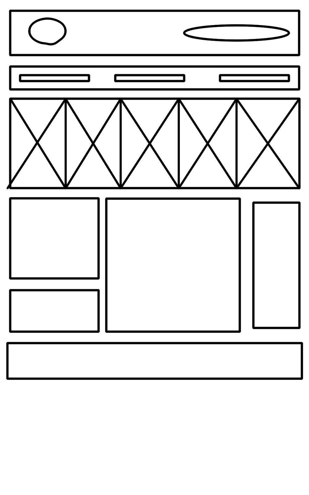
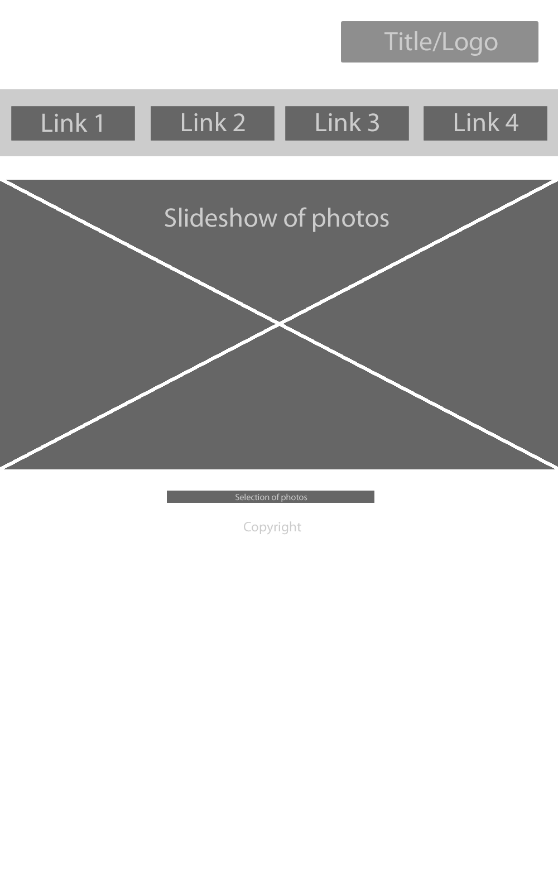
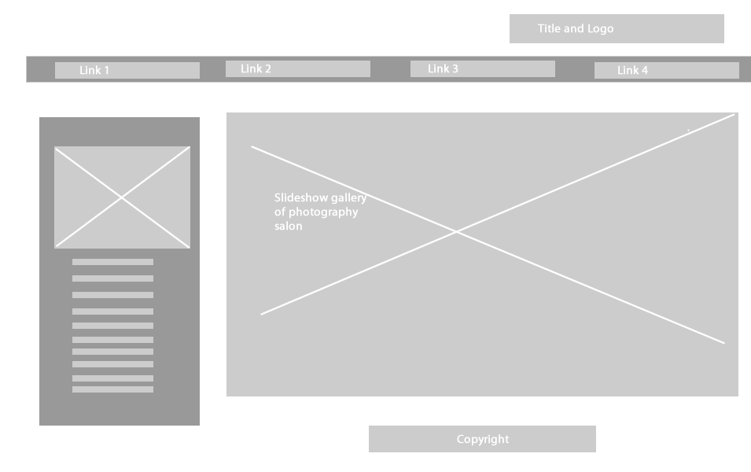
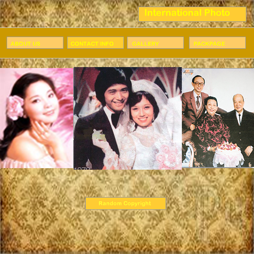

Photography planning site
Project name: International Photo Webpage
Background
To design a website for my grandfather's photography studio. This digital base would help him to notify details and location of his studio more precisely
Objectives
- To expand the market base to a more international audience, by creating an online platform that appeals to non facebook users.
- The site should showcase the style and theme of the photography salon as a well established and professional brand name, which cannot be achieved in a simple facebook page
- The site's displays serve as a reference for auction purposes
Success Criteria
- The logo fits 1/10 of the front page and can still be visible.
- The slideshow is working and it does not contrast badly with the background color.
- The design and typography of the font fit the style of the photography studio.
- Make sure usable and relevant content is put on instead of a block of words.
Project Audience
The primary audience of this site are the past and potential customers of our clients photography salon.
The audience can get onto the site by namecards or google, whenever they want to search for old photographic techniques and archaic photography taking.
- Customers who would like their self portraits to be taken in black and white or other ancient, non-digital styles
- appeals to an international market and more specifically the young generation who would like to study photography
Flowchart
We have chosen the above flowchart because it displays the layout and directions of the webpage clearly
Wireframe
Wireframe ideas for first page:
Helen's wireframe.

Jennifer's wireframe

Bhayva's wireframe
Jaliff's wireframe

Hifi wireframe ideas of chosen design:
Feedback and changes from discussion
- Clients' photographs are confidential, so we have a problem that we cannot use photos of people, including family photos.
- We may need to get the photographs from pamphletes or other Internet resources
Research
Storyboard
Helen's storyboard.
